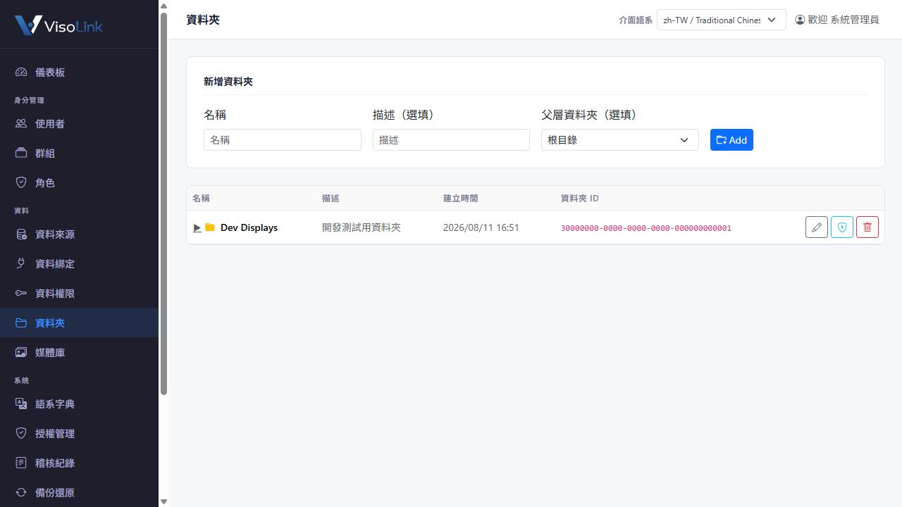

Folders 資料夾
後台 Folders 提供集中式階層與權限管理；前台 Display Library 則提供圖面工作流程中的相同資源操作。
瀏覽資料夾階層

- 點選「資料 → 資料夾」。
- 展開父資料夾查看子階層。
- 使用權限按鈕查看目前規則。
建立資料夾
- 在新增區輸入名稱與選填說明。
- 選擇父資料夾；留空表示根層。
- 點選建立。
- 確認資料夾出現在正確階層。
資料夾出現在指定父層，名稱與描述正確。
編輯與移動資料夾
- 點選資料夾的編輯。
- 修改名稱、說明或父資料夾。
- 確認新父層不會形成循環，並檢查權限影響。
- 儲存後重新展開階層確認。
管理資料夾權限
- 展開目標資料夾的權限區。
- 選擇 PrincipalType、Principal 與 AccessLevel。
- 新增或更新規則。
- 刪除不再需要的規則。
- 以前台帳號驗證 Folder 與子內容的顯示結果。
測試帳號只看到被授權的 Folder；Display 是否可開啟仍依 Display 權限判斷。
刪除資料夾
- 確認子 Folder、Display 與權限已處理。
- 點選刪除。
- 閱讀阻擋或確認訊息。
- 只有在影響範圍正確時才確認。
高風險：不要以刪除方式整理仍在使用的階層；應先移動內容並驗證。